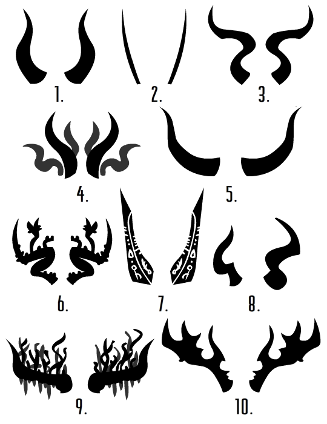

Though humans believe they have a monopoly on fashion trends, Our Friends Below are no strangers to mercurial styles. Clothes aren’t a huge deal, except insofar as they pair well or poorly with horns.
Above: a sample of ten popular horn styles and what they communicate.
1. The Classic. A great way of communicating, “Horn fashion peaked four thousand years ago. I have no time for all this nonsense, now let’s get down to business.” Any noble with these horns is either a tedious stick-in-the-mud or a principled stalwart. (Or a young noble making a flimsy claim of ‘I’m not like those other frivolous youths.’)
2. Sleek. Favored by nobles who aspire to be lithe, slippery tricksters. All the actual tricksters have realized this and chosen some other horn style, and so these indicate a smug, arrogant noble who is much less (or more) dangerous than they think they are.
3. Wavy. Excellent for projecting an air of erotic, tantalizing power; common choice among succubi, incubi, etc. Often draped with chains of fabulously rare stones.
4. Feral. Having wild, curly clusters of horns is a sign of being related to satyrs; going overboard with it is a dead giveaway that the noble is playing up a tiny shred of heritage.
5. The Bull. The only style that communicates “I am not here to fuck around” more than The Classic. Either firmly resolute or just impossibly stubborn.
6. Wild Desert. Unbearable hippie, but definitely knows a thing or two about syncretic mysticism. Listen close, but it might just be a total waste of time.
7. Runic. Prestigious symbol of arcane mastery, impossible to convincingly fake. Definitely knows some spells that’ll shock the most jaded noble, and some they know to never speak aloud.
8. Stylish Asymmetry. For hip, avant-garde nobles glued to their Brimstone smartphones. Also seen on old nobles making a desperate bid to fit in with the Youth of Today.
9. Overgrown. For nobles who reject the stuffy old geometry of alchemical glyphs, embracing untamed magic in the wild parts of the Underworld. Often found with Wild Desert nobility.
10. The Buck. The Bull’s less-restrained friend; none of the simmering poise, all of the hellbent conviction. Best to let them win an argument.
(Feel free to tag yourself in this.)